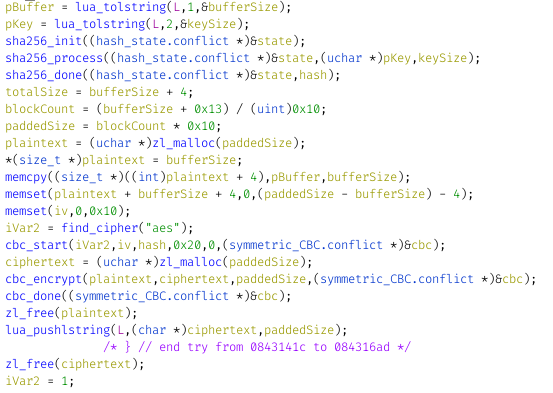

So, I recently started replaying the Hack 'n' Slash game, which is, unlike what it’s name may suggest, a Puzzle game, based on being able to modify some element, while not being direcly a programming game. This was quite fun, and I finished it in a few hours. But after that, I didn’t knew what to do. So I planned on decompiling the lua files, and analyze some of them in greater detail than with the in-game dissasembler.
But there was also this SecretRoom.lua. At first, when I discovered it, I didn’t minded about it much. Sure, a book that can’t be read, surely encrypted like the PrincessChambers.lua would have been if I hadn’t disabled the encryption function in DRMRoof.lua. When I saw it, I haven’t yet finished the game, so I continued my business of finishing the game without having any file removed. (it turns out the first burned book is only about setting some variable at the beginning of the game, but I still suceeded in not getting it burned. After at least 3 attempts).
As you can see, I tend to disgress quite quickly...
So, I decided to, instead of decompiling the lua files and looking at their code (that also apply to the non-compiled lua files), to look at this SecretRoom.lua. I already had some experience in the subject: good reverse engineering skill (this is what the game is about, more than programming) from my work on various video game, mostly Pokémon Mystery Dungeon: Explorers of Sky (it have a really good hacking community with SkyTemple btw), analyzing lua file with my work on adding (and analyzing) cutscenes in Pokémon Super Mystery Dungeon and encrypted file hacking from Fragment 3 (one of those Explorers of Sky hack) by Irdkwia. (It was a Vigenere cypher, but I figured that and the key with static executable analysis — figuring where the code was was rather simple, as it was at the start of the memory space unused by the game, where custom code tend to be)
So I opened the file in an HEX editor, and starting taking a quick look at it, mostly by assuming the file start with \x1bLua, and looking at the difference (if this where a Vigenere encoding — and that the file actually started with \x1bLua — is would likely have given some meaningfull ASCII text instead of some random bytes) with no sucess.So I decompiled the lua files using the really good unluac tool, with a bit of recursion and a Python script (I already did something similar on Super Mystery Dungeon, but I have no idea where I put it. You can find the script here. Will need some adaptation to work for you thought).
I also quickly looked with a script to see if there where other encrypted lua files (they were not. Even not the two princess chambers) by checking those headers.
My findings: the file is never referenced in the luas, and the encryption function that PrincessChambers.lua (I assumed it was encrypted using the same algorithm, as it’s what would make most sense, being able to decrypt it in-game) was encrypted with was nowhere to be found in the lua files.
So I looked in the game executable. Opened it with Ghidra and... It was the most verbose file I ever worked with, with all the debug informations. It even had variable names (did they forgot to compile optimized binary for Linux? I indeed found the game slow at time. And often unbearably slow when hacking functions with hundreds of lines). With that, finding the function was just as easy as looking for its name in the function list, and letting the decompiler do its job.
The encryption is as follow: Take the input key, hash it with sha256, then encrypt the content with a 256bits AES with a CBC (a kind of block cipher, say Wikipedia. As I understand, it allow to split the content on 256bits, what AES256 works with, while preventing cryptanalysis). I think this is supposed to be written AES-256-CBC.
Knowing the algorithm, I started to plan how I could decrypt it. AES is serious encryption, so my best (and likely only) option was to bruteforce it. But with which words? I expected it to be multiple words, like the key for the PrincessChambers, with some words of common vocabulary, and maybe some domain specific words. Of course, that would need substitutions too.
My plan for looking the password was as follow: take every word present in the game, add a few thousands of common words, then compose phrases with them, separated with space, and optionally ending with a dot. I would also try to change each word initial letter punctuation (and in the end, it would have worked). But first, I needed to write something I could decrypt the file and write my bruteforcer with (after figuring out that trying to modify John the Ripper will likely take too much time)
I started to reimplement it in Rust, my favorite language, using some library (namely, cbc, aes and sha2) but then, I went to sleep, before finishing it.
Of course, tomorrow, I had to go to work. Sadly, this problem didn’t came out of my head. So I decided to see if I could find the source code of the game (they spoke about it in some promotion video), but I couldn’t find it (turn out it was the uncompiled lua files they referenced). However, I found a nice writing of someone which had the same challenge than me on GitHub (it was of course obvious I wasn’t the first one to try on it. But it actually turned out that was only about 2 months ago, surprisingly not long ago for a game published in 2014 (I wrote this article in january 2023)). Decided to read it quickly and give up, hoping to be able to better focus on my current work, but then I quickly focused on a paragraph: "The encryption string is present in the game" (or something like that), said by a dev. I immediatly stopped reading, knowing it would actually be easily doable.
So, I started formalizing some algo to iterate over every byte sequence present in files that I already imagined a long time ago, without remembering why, and never using it.
It’s simple (in pseudocode):
for every number (named X) between 1 and the maximum key length:
____allocate Y to a buffer of size X
____for a number (named Z) between 0 and the file size minus X:
________fill Y from the value at Z in the file
________check the buffer Y against the encrypted file
Yeah, didn’t took time to find how to properly space stuff in HTML code fragment...
With this, I planned to have at most 20 Gigacheck (200M * 100), which would probably take a few hours on 8 threads of the CPU. I planned too continue to check the validity of the decryption using the \x1bLua header, with only about 4G possibilities, so I should also end with a few false positives, but those should be manageable.
Back at home, I finished the program. Decompiled the save, grabbed the section containing the encrypted PrincessChambers.lua (or was it PrincessChambersCopy.lua? I don’t remember PrincessChambers.lua being encrypted at any time in my playthrought), and save it to a file (by pasting it in in a lua file, adding some code to save its content, and running it). After a few failed attempt solved by proofreading my code, I was able to decompress it. Turns out the first 4 bytes contain the file size, something I overlooking in the decompiled code, but something easy to adapt to (in retrospective, this would have been a better option to check if the file was correctly decoded, as it should always be something between the encrypted file lenght − 4 and the file size − 256 − 4, thought I would need to better look at the code to check that. That would afford me a 3 bytes check, which should still be manageable).
After a correct decryption, it was time to write the bruteforce part. Of course, I planned what I needed to make it multithreaded, with the potential to reduce by a factor of 8 the computing time. I adeded the bruteforce code, in this order:
After checking it sucessfully worked on the chamber file (and finding there weren’t much to optimise — the fact that the file is read from the fs for each tasks didn’t seemed to be the cause of any slowdown, probably thank to the in-memory Linux filesystem cache —), I ran it on said encrypted file and, after 7 minutes and 42 seconds...
Nothing :(
Despite the tentation to give up being great, I still tried some other stuff. I increased the maximum key size, tried to look at the header at the first bytes, ignoring the file size. I also formulated this could be hidden in some of the compressed files.
I then thought of how I could check if the file was not a compiled file. Something nice with compiled files is that they have a known 4 bytes header, not the case for human written lua, which could be everything. Still, I guessed it would likely begin with some pattern. And I actually knew what it could be, from my previous look to see which file where encrypted or not, with the "loca" and "-- " being the most commons. I also added "----" for good measure, as I saw that in some files.
And, after another run, it found a result. Actually, it found hundreds of possiblity (there were now around 1.2e-07 chance (over 1) of a file matching a random key). Inside the log, I saw some stuff that looked like text, and among them, one that stood out, "Be brave." (as well as other text composed of part of phrase, path or mangled function names from the game executable. And other byte sequences). After having all those files, I looked if any one contained "local" (hard to write a script without local. At least all the other files I’ve seen used it).
And sure, I found one! And after decoding the hex file name, it inded was "Be brave."!!!
Took a quick look at the file content: It seems to be a cutscene. So hoped into the game, decrypted the book, and then... spent about 30 minutes figured how I could make a custom warppoint (remembering I did that on the previous playthrought a few years ago). Ended up with editing the DRMRoof.lua init function.
And then... I had that cutscene! As expected (from what I skimmed over the script before) it was the developer talking a bit about the game, and, the best part, more details about the development team.
Of course, I latter took a look at the other solution that existed... And it was rather different than the way I procedded, thought sharing some similarity. I also looked at some article (here), and I surprisingly learned that there actually were a lot more peoples who tried to hack this in a community way (and learned there actually were a community). (I tend to avoid asking others for help, mostly cause I don’t want to bother them. Althought I sometimes do). I’ll comment that the fact I restarted playing the game had nothing to do with that secret being discovered. It was more like “What game could I play tonight...” (the first answer being Hack 'n' Slash. The second being continuing my Cyberpunk 2077 playthrought. The third being continuing to learn CEPH by practice).
So now that’s done... I plan on doing some other stuff. Maybe I’ll have some fun modding Hack 'n' Slash some day, but not in the short term. I will probably try finishing to integrate the improved sprite compression algorithm in SkyTemple, continue playing CyberPunk 2077 and putting in place a functional CEPH cluster for personnal use.
Have a good day
ps: Nearly forgot to share this. You can find my Rust code in this .tag.gz archive.
ps2: proofread it post-puplication. Fixed some typo, and added some minor details.